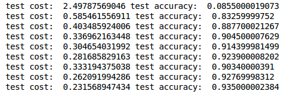

RNN Classifier 循环神经网络
作者: Mark JingNB 编辑: 莫烦 2016-10-30
学习资料:
方法介绍
这次我们用循环神经网络(RNN, Recurrent Neural Networks)进行分类（classification），采用MNIST数据集，主要用到SimpleRNN层。
from keras.layers import SimpleRNN, Activation, Dense
MNIST里面的图像分辨率是28×28，为了使用RNN，我们将图像理解为序列化数据。
每一行作为一个输入单元，所以输入数据大小INPUT_SIZE = 28；
先是第1行输入，再是第2行，第3行，第4行，…，第28行输入，
这就是一张图片也就是一个序列，所以步长TIME_STEPS = 28。
训练数据要进行归一化处理，因为原始数据是8bit灰度图像所以需要除以255。
X_train = X_train.reshape(-1, 28, 28) / 255. # normalize
X_test = X_test.reshape(-1, 28, 28) / 255. # normalize
搭建模型
首先添加RNN层，输入为训练数据，输出数据大小由CELL_SIZE定义。
model.add(SimpleRNN(
# for batch_input_shape, if using tensorflow as the backend, we have to put None for the batch_size.
# Otherwise, model.evaluate() will get error.
batch_input_shape=(None, TIME_STEPS, INPUT_SIZE),
output_dim=CELL_SIZE,
unroll=True,
))
然后添加输出层，激励函数选择softmax
model.add(Dense(OUTPUT_SIZE))
model.add(Activation('softmax'))
设置优化方法，loss函数和metrics方法之后就可以开始训练了。
每次训练的时候并不是取所有的数据，只是取BATCH_SIZE个序列，或者称为BATCH_SIZE张图片，这样可以大大降低运算时间，提高训练效率。
训练
for step in range(4001):
# data shape = (batch_num, steps, inputs/outputs)
X_batch = X_train[BATCH_INDEX: BATCH_INDEX+BATCH_SIZE, :, :]
Y_batch = y_train[BATCH_INDEX: BATCH_INDEX+BATCH_SIZE, :]
cost = model.train_on_batch(X_batch, Y_batch)
BATCH_INDEX += BATCH_SIZE
BATCH_INDEX = 0 if BATCH_INDEX >= X_train.shape[0] else BATCH_INDEX
输出test上的loss和accuracy结果
if step % 500 == 0:
cost, accuracy = model.evaluate(X_test, y_test, batch_size=y_test.shape[0], verbose=False)
print('test cost: ', cost, 'test accuracy: ', accuracy)

有兴趣的话可以修改BATCH_SIZE和CELL_SIZE的值，试试这两个参数对训练时间和精度的影响。
如果你觉得这篇文章或视频对你的学习很有帮助, 请你也分享它, 让它能再次帮助到更多的需要学习的人. 莫烦没有正式的经济来源, 如果你也想支持 莫烦Python 并看到更好的教学内容, 赞助他一点点, 作为鼓励他继续开源的动力.